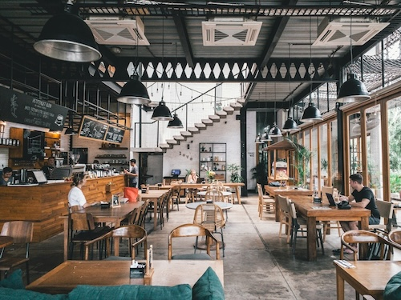

Santi’s Bar is the perfect blend of a laid-back restaurant and a lively bar, offering an unforgettable experience for food and drink lovers alike. Our menu is packed with bold flavors,from juicy burgers and fresh seafood to gourmet appetizers and small plates perfect for sharing. Whether you’re craving a hearty meal or just some light bites to pair with your drink, our kitchen delivers high-quality dishes made with fresh ingredients. Our drink menu is just as impressive, featuring handcrafted cocktails, local craft beers, and a carefully curated wine selection. Whether you’re sipping on a classic mojito, a bold whiskey cocktail, or an ice-cold beer, every drink is expertly crafted to match the vibrant energy of Santi’s Bar.
Beyond great food and drinks, Santi’s Bar is all about the atmosphere. With a mix of lively music, themed events, and occasional live entertainment, every night here feels special. Whether you’re catching up with friends, enjoying an after-work drink, or celebrating a special occasion, our welcoming space and friendly staff make sure you feel at home. From DJ nights to casual happy hours, we bring people together with good vibes and great service. Come for the food, stay for the fun—Santi’s Bar is the go-to spot for anyone looking for a memorable night out.
About
Nestled in the heart of the city, Santi’s Bar is more than just a restaurant and bar—it’s a place where good food, great drinks, and unforgettable experiences come together. Whether you’re looking for a spot to grab a casual bite, enjoy handcrafted cocktails, or kick back with friends for a night out, Santi’s Bar has something for everyone.
Our Story
Santi’s Bar isn’t just about food and drinks—it’s about creating an experience. With a laid-back yet energetic vibe, it’s the perfect place to unwind after work, celebrate a special occasion, or simply enjoy a night out with friends. Our warm and welcoming atmosphere, combined with great music and friendly service, makes every visit one to remember.
About The Menu
Whether you’re stopping by for a quick bite, an after-work drink, or a weekend celebration, Santi’s Bar is the place to be. With delicious food, creative cocktails, and an atmosphere that keeps people coming back, we’re all about bringing people together for great times.
This is my Menu
-
Beer
- Guiness
- Pilsner
- Stella
-
Coctails
- Dragonfruit Margarita
- Mosco Mule
- Mojito
-
Food
- Nachos
- Fries
- Tacos
Directions to Santi Bar
- Step 1: Call an Uber
- Step 2: Type Santi Bar
- Step 3: Come to the best place on earth